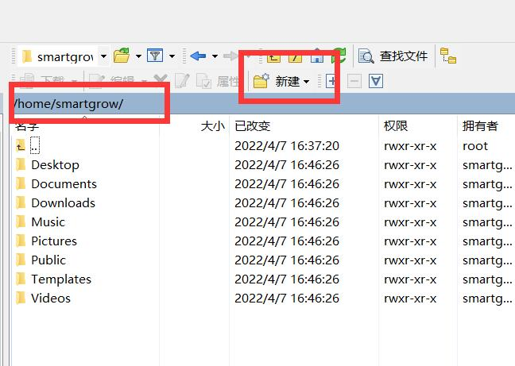

step0. 设置服务器ip地址
在系统设置中点击网络，选择网络选项，并点击右侧设置图标如图：
找到IPv4,选择手动,如图：
地址填写有线ip
子网掩码填写255.255.255.0
网关填写192.168.1.1
点击wifi选项， 找到连接的无线网，点击右侧设置图标，如图：
找到IPv4,选择手动,如图：
地址填写无线ip
子网掩码填写255.255.255.0
网关填写10.0.0.1
DNS填写10.0.0.1
点击应用后，关闭wifi，再重新打开wifi，检测是否能够正确联网。如图：
step1. 获取服务器ip地址
在Ubuntu命令行中，执行下面命令：ifconfig。如图：
红色框中的ip即服务器的ip。地址。如图：
上图中服务器的ip地址为：192.168.153.129
step2.修改root用户密码
执行下面命令：sudo passwd root。如图：
在弹出的询问框中输入 Grow_@0!6，回车，然后继续输入 Grow_@0!6。如图：
step3.修改etc/ssh/sshd_config
执行下面命令：sudo gedit /etc/ssh/sshd_config 。会弹出一个文本编辑器。如图：
在文本编辑器的最下方插入如下内容：
PermitRootLogin yes
StrictModes yes
如图：
然后保存退出。
step4.重启ssh服务
执行下面命令：service sshd restart 。如图：
在弹出的对话框中输入密码。如图：
step5.WinSCP连接服务器。（从这一步一直到结束均在本地计算机中操作）
打开本地计算机的WinSCP软件。WinSCP界面如图所示：
填写主机名、用户名、密码登录。
选择“是”
step6.新建目录。
新建NMM_I目录。并进入该目录。如图：
step7.拷贝内容
将install包中NMM_I的所有内容(不含NMM_I文件夹)拖拽到该目录中。如图：
step8.putty连接服务器。
打开本地计算机的putty软件。putty界面如图所示：
这里填写服务器ip地址，其他选项均为默认，然后点击open。如图所示：
输入用户名和密码登录。出现Welcome字样则代表连接成功。如图：
step9.接入服务
输入ls命令可以查看当前文件夹中包含了刚才添加的NMM_I文件夹。如图：
输入cd NMM_I进入该文件夹。然后输入ls 查看到该文件夹下有NMMInstall.sh文件。如图：
执行命令sudo bash NMMInstall.sh，并输入密码。如图：
如果出现下图情况表示操作成功。

step10.重启ubuntu
ubuntu命令窗口中输入sudo reboot，并输入密码。如图：
然后拍等待系统重启。